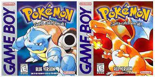

Come nasce:
Pokémon è un franchise di proprietà di The pokémon Company nato nel 1996 dall'idea di Satoshi Tajiri.
Nasce come una coppia di titoli, Pokémon versione Rosso e Blu.
Con non pochi problemi nel suo periodo di sviluppo, dopo l'uscita della sopracitata coppia di titoli ottenne un boom immenso.

I pokémon nascono in Giappone dove l'hobby di catturare insietti è molto diffuso.
E' qui che il giovano Satoshi Tajiri sviluppò l'idea di creare un gioco che andrà a definire uno standard per i "monster collector".
Infatti Pokémon nasce con uno slogan: "Gotta catch 'em all" ovvero "Acchiappali tutti", ed è proprio questa la sua filosofia, catturare tutti i mostriciattoli tascabili.
La prima coppia di titoli uscì per Gameboy, una famosa console portatile di casa nintendo!
Il nome Pokèmon nacque dall'unione delle parole inglesi "Pocket" e "Monsters", letteralmente "Mostri tascabili".